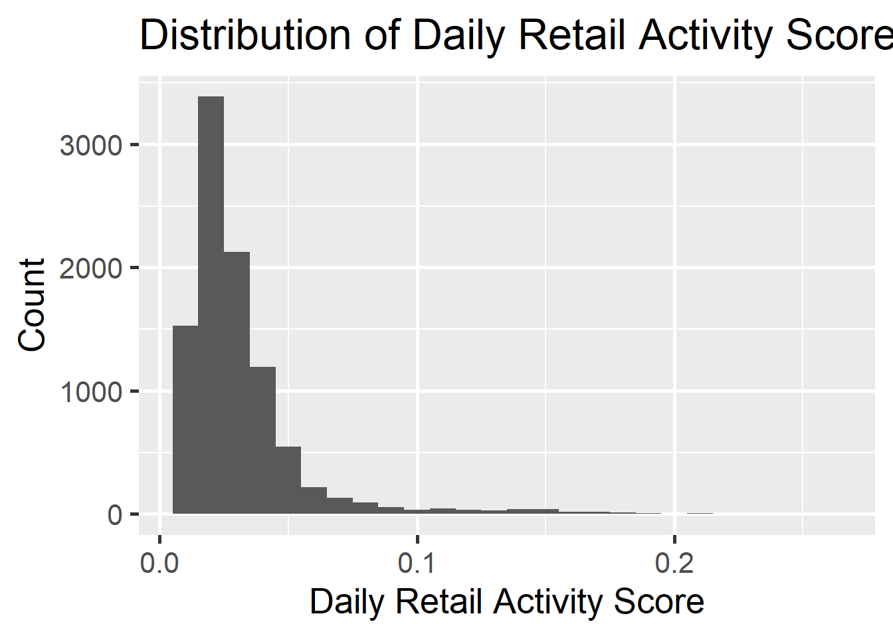
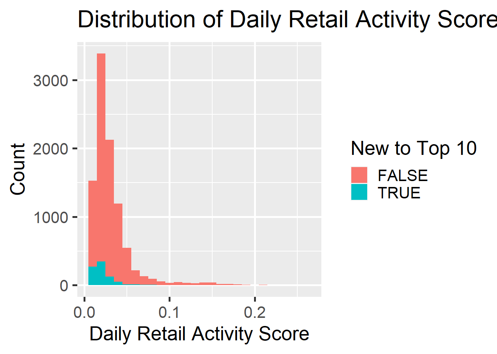
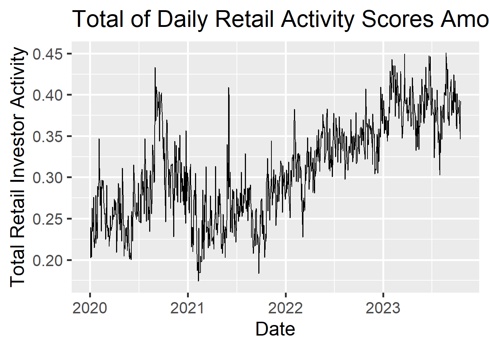
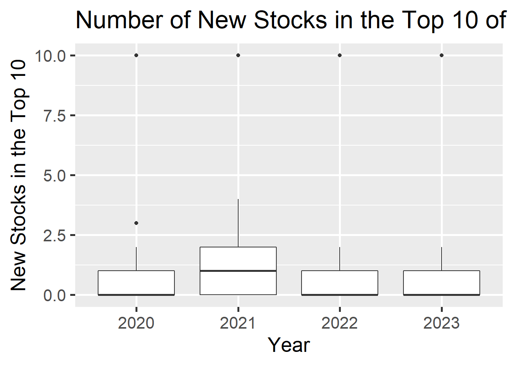
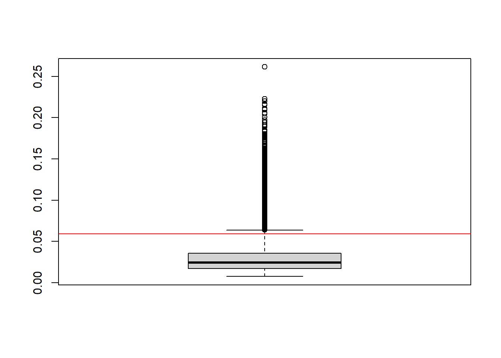

At the broadest level, there is a temporal component to the research question that will shape how we conduct the analysis. Namely, the outcome variable is retail trading activity in stocks, as measured by daily holding data on the top 10 stocks sourced from NASDAQ’s API. As such, we are interested in data from the other datasets (reddit text information, investor sentiment survey, stocktwits ranking) as of one day before. I will merge the datasets in R, and then use R (ggplot) to create visuals and carry out EDA.
v ggplot2 3.3.5 v purrr 0.3.4
v tibble 3.2.1 v dplyr 1.1.2
v tidyr 1.2.0 v stringr 1.4.0
v readr 2.1.2 v forcats 0.5.1
-- Conflicts ------------------------------------------ tidyverse_conflicts() --
x dplyr::filter() masks stats::filter()
x dplyr::lag() masks stats::lag()
library(Quandl)
Loading required package: xts
Loading required package: zoo
Attaching package: 'zoo'
The following objects are masked from 'package:base':
as.Date, as.Date.numeric
######################### Warning from 'xts' package ##########################
# #
# The dplyr lag() function breaks how base R's lag() function is supposed to #
# work, which breaks lag(my_xts). Calls to lag(my_xts) that you type or #
# source() into this session won't work correctly. #
# #
# Use stats::lag() to make sure you're not using dplyr::lag(), or you can add #
# conflictRules('dplyr', exclude = 'lag') to your .Rprofile to stop #
# dplyr from breaking base R's lag() function. #
# #
# Code in packages is not affected. It's protected by R's namespace mechanism #
# Set `options(xts.warn_dplyr_breaks_lag = FALSE)` to suppress this warning. #
# #
###############################################################################
Attaching package: 'xts'
The following objects are masked from 'package:dplyr':
first, last
library(lubridate)
Attaching package: 'lubridate'
The following objects are masked from 'package:base':
date, intersect, setdiff, union
Warning: There was 1 warning in `mutate()`.
i In argument: `Bullish = as.numeric(str_replace(Bullish, "%", ""))/100`.
Caused by warning:
! NAs introduced by coercion
Warning: There was 1 warning in `mutate()`.
i In argument: `Neutral = as.numeric(str_replace(Neutral, "%", ""))/100`.
Caused by warning:
! NAs introduced by coercion
Warning: There was 1 warning in `mutate()`.
i In argument: `Bearish = as.numeric(str_replace(Bearish, "%", ""))/100`.
Caused by warning:
! NAs introduced by coercion
joinedSentiment <-left_join(rtatIn, sentimentIn, by ="weekyear")head(joinedSentiment)
X date.x ticker activity sentiment deltaActivity deltaSentiment
1 9551 2020-01-02 TSLA 0.0226 0 -0.0014 0
2 9552 2020-01-02 SPY 0.0147 3 -0.0341 -7
3 9553 2020-01-02 ROKU 0.0119 0 0.0000 0
4 9554 2020-01-02 QQQ 0.0093 6 -0.0111 1
5 9555 2020-01-02 MSFT 0.0116 2 -0.0181 1
6 9556 2020-01-02 FB 0.0093 -2 -0.0078 -2
newEntry week.x weekyear date.y Bullish Neutral Bearish Total X8.week Spread
1 FALSE 1 2020 1 <NA> NA NA NA <NA> <NA> NA
2 FALSE 1 2020 1 <NA> NA NA NA <NA> <NA> NA
3 TRUE 1 2020 1 <NA> NA NA NA <NA> <NA> NA
4 FALSE 1 2020 1 <NA> NA NA NA <NA> <NA> NA
5 FALSE 1 2020 1 <NA> NA NA NA <NA> <NA> NA
6 FALSE 1 2020 1 <NA> NA NA NA <NA> <NA> NA
SPYHighWk SPYLowWK SPYCloseWK week.y lagweek
1 <NA> <NA> <NA> NA NA
2 <NA> <NA> <NA> NA NA
3 <NA> <NA> <NA> NA NA
4 <NA> <NA> <NA> NA NA
5 <NA> <NA> <NA> NA NA
6 <NA> <NA> <NA> NA NA
Numeric Summaries
summary(joinedSentiment$activity)
Min. 1st Qu. Median Mean 3rd Qu. Max.
0.00760 0.01720 0.02460 0.03103 0.03590 0.26150
summary(joinedSentiment$sentiment)
Min. 1st Qu. Median Mean 3rd Qu. Max.
-23.0000 -1.0000 1.0000 0.9117 3.0000 19.0000
summary(joinedSentiment$deltaActivity)
Min. 1st Qu. Median Mean 3rd Qu. Max.
-0.194000 -0.003700 0.002100 0.003997 0.011600 0.232000
summary(joinedSentiment$deltaSentiment)
Min. 1st Qu. Median Mean 3rd Qu. Max.
-24.000 -3.000 0.000 -1.259 1.000 20.000
summary(joinedSentiment$Bullish)
Min. 1st Qu. Median Mean 3rd Qu. Max. NA's
0.1584 0.2483 0.3188 0.3262 0.3956 0.5691 290
summary(joinedSentiment$Bearish)
Min. 1st Qu. Median Mean 3rd Qu. Max. NA's
0.1976 0.2751 0.3805 0.3732 0.4490 0.6087 290
summary(joinedSentiment$Neutral)
Min. 1st Qu. Median Mean 3rd Qu. Max. NA's
0.1450 0.2715 0.3043 0.3005 0.3345 0.4091 290
summary(joinedSentiment$Spread)
Min. 1st Qu. Median Mean 3rd Qu. Max. NA's
-0.43100 -0.19200 -0.07500 -0.04695 0.11700 0.36500 290
Barplots for discrete variables:
ggplot(joinedSentiment, aes(x = newEntry)) +geom_bar() +labs(x="Current Stock is in Top 10", y ="Count", title ="Distribution of New Stocks Amongst Top-10 Stocks by Retail Activity") +theme_grey(base_size =20)
In addition to the porportion of new stocks in the top 10, the table shows up the top 10 stocks by number of days spent in the top-10 ranking of retail investor actvity. We can see that the distribution has a heavy right tail, as even amongst the top 10 stocks there is a large divergence, with the top stock (AAPL) having more than two times as many days in the top 10 as the 10th place stock (MSFT).
Outcome Variable Exploration
First, lets explore the outcome variable table, of the top 10 retail-investor held stocks each day. Each stock has an ‘activity’ number which measures the percent of traded shares held by retail investors. Let’s see how those scores are distributed:
ggplot(joinedSentiment, aes(x = activity)) +geom_bar(stat ='bin', binwidth =0.01) +labs(x="Daily Retail Activity Score", y ="Count", title ="Distribution of Daily Retail Activity Scores Amongst Top-10 Stocks") +theme_grey(base_size =20)

Activity scores seem to be skewed to the right, with a thin tail. I wonder which stocks compose the highest activity values. Let’s look at which of these scores were from stocks that had just appeared in the top 10 that day:
ggplot(joinedSentiment, aes(x = activity, fill = newEntry)) +geom_bar(stat ='bin', binwidth =0.01) +labs(x="Daily Retail Activity Score", y ="Count", title ="Distribution of Daily Retail Activity Scores Amongst Top-10 Stocks", fill ="New to Top 10") +theme_grey(base_size =20)

From this chart, we can see that most of the high-activity scores are from stocks which previously entered the top 10. This makes sense, as we would expects stock to increase in activity over multiple days, before reaching the top of the list. Similar to songs on top music charts.
My next question is how the outcome variable has changed over time. Let’s look at attention scores over time:
joinedSentimentAvgs <- joinedSentiment %>%group_by(date.x) %>%summarize(dailyactivitytotal =sum(activity), dailyactivityavg =mean(activity),dailynewtickers =sum(as.numeric(newEntry))) ggplot(joinedSentimentAvgs, aes(x = date.x, y = dailyactivitytotal)) +geom_line() +labs(x="Date", y ="Total Retail Investor Activity", title ="Total of Daily Retail Activity Scores Amongst Top-10 Stocks", fill ="New to Top 10") +theme_grey(base_size =20)

This chart is interesting because it shows that our outcome variable has a clear upward trend over time. Retail investors appear to be a greater proportion of the total activity in the stock market today than they were in 2020.
One last visual I wanted to create to evaluate the outcome variables was the number of new top-10 stocks that entered the list each week
library(ggbeeswarm)ggplot(joinedSentimentAvgs, aes(x =as.character(year(date.x)), y = dailynewtickers)) +geom_boxplot() +labs(x="Year", y ="New Stocks in the Top 10", title ="Number of New Stocks in the Top 10 of Retail Activity by Year", fill ="New to Top 10") +theme_grey(base_size =20)

Here we can see there is not a huge difference in the distributions of new stocks between the years, except for 2021, when there was a lot more days with at least 1 new stock in the top 10. But far and away, at least 50% of days have no new stocks in the top 10 of retail trader activity.
Bivariate Analysis
Now, lets look at some of the predictor variables in relation to the outcome variables.
The correlations between weekly investor sentiment polling and investor activity in the following week are displayed in the plot. While many crosstabs are highly correlated, these are only because the variables have been calculated together (i.e. the sentiment polling includes % with positive sentiment and % with negative sentiment, which are perfectly correlated since they are two sides of the same measure). The highest correlation value recorded outside these collinear predictors was ~0.115 for the spread in bullish and bearish opinion vs. sentiment towards top10 stocks.
This correlation makes sense, because both measures are capturing the same underlying phenomena: investor sentiment. If retail investor sentiment is bearish about the market in general, then it would likely also be negative about particular stocks.
Outliers and Segmentation
We already saw in the overtime chart that perhaps 2021 was a different type of year than the other 3, as it had a high percentage of days with new stocks in the top 10.
Lets look at the key outcome variables and see if any values violate Tukey’s rule
boxplot(joinedSentiment$activity)cutoff <-mean(joinedSentiment$activity) + (1.5*IQR(joinedSentiment$activity))abline(h = cutoff, col ="Red")

With the red line above denoting the 1.5*IQR + mean threshold, we can see that many values lie above this line, but they do not appear to be separated from the main distribution. Rather, it looks like the main distribution has a fat right tail. Perhaps it would be well approximated by a Student’s distribution.